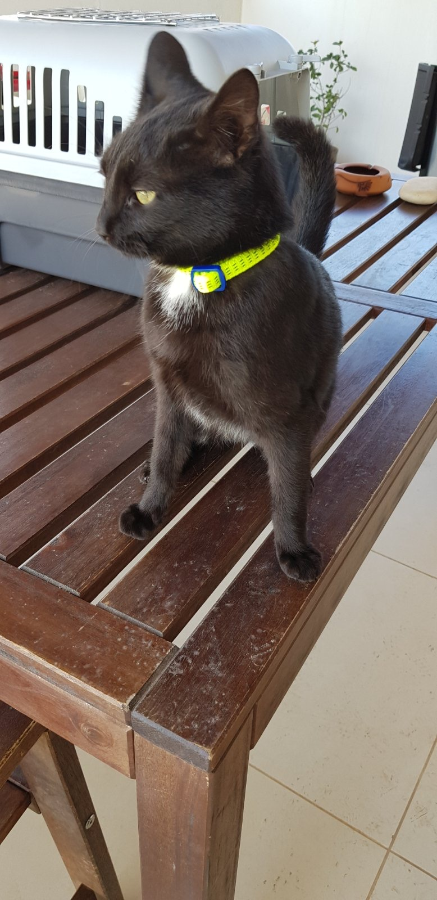
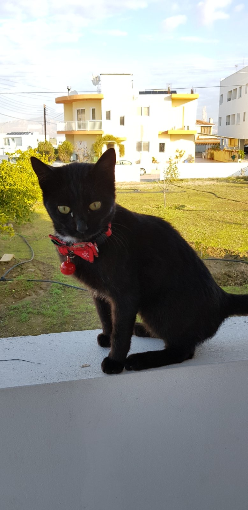
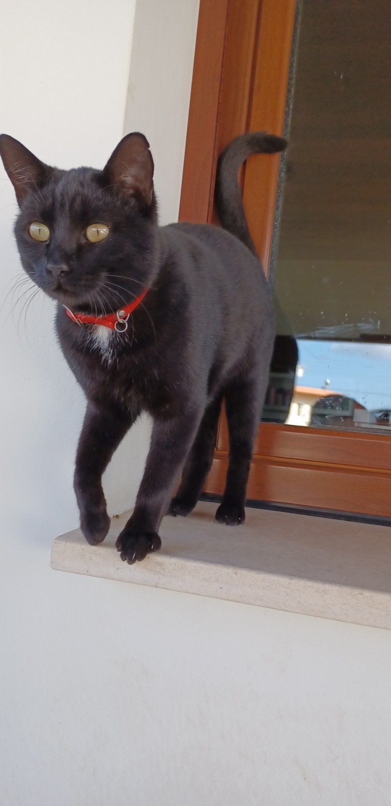

O ταρζάν ο αμπαλατος
keimeno
Τα ενδιαφεροντα του
ο ταρζάν εκάθεται ούλλη μέρα. Όταν εχει ενέργεια κάνει τούμπες και καθεται πανω στα τραπέζα και κάτω απο παγκάκια και περιμένει να τον ταϊσεις και να τον χαηδεύεις.
Εμφάνιση
εν κατάμαυρος και τον θεωρούν γρουσούζ.Έχει μια ουρα κεραία που ξύπαζει σε όταν κάθεσαι
εθελοντισμος
Ο ταρζάν είναι ενα ιδιαίτερο κατοικίδιο διότι βρέθηκε από ενα καταφύγιο και υιοθετήθηκεέπειτα από εμάς. Γενικά, σαν άνθρωποι μπορούμε να υιόθετήσουμε ζώα και να τα πάρουμε κατοικίδια από καταφύγια. Μία τετοια μικρή πράξη θα μπορέσει να σώσει μία ζωή και να του αλλάξει την ζωή.


